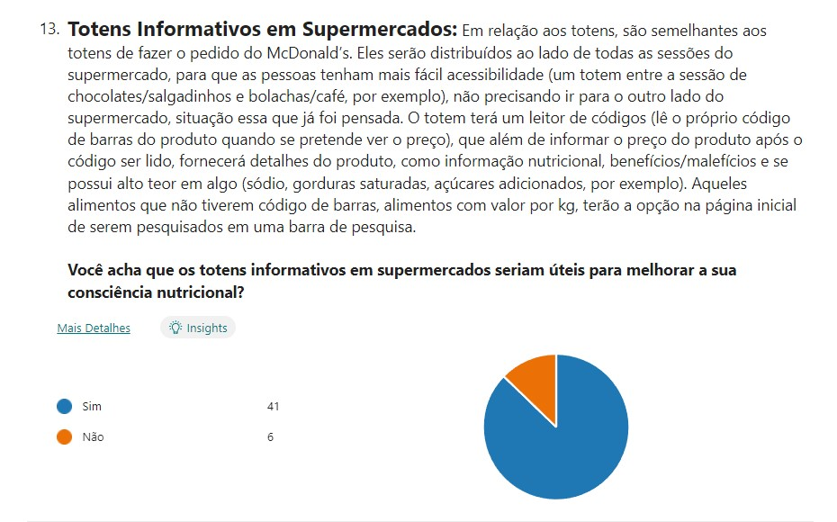

Com que frequência você lê os rótulos dos alimentos antes de comprá-los?
Nunca (2 respostas): Falta de interesse ou confiança em outras fontes.
Raramente (10 respostas): Pode ser devido à falta de tempo ou conhecimento.
Às vezes (15 respostas): Leitura ocasional, principalmente em dietas específicas. Frequentemente (11 respostas): Leitura regular para escolhas alimentares conscientes.
Sempre (9 respostas): Leitura consistente por razões específicas, como alergias ou dietas restritas.
Com que frequência você faz compras em supermercados?
1 vez ao mês: Prefere compras mensais para economizar e planejar.
1 vez por semana: Mantém alimentos frescos com organização.
2 vezes por semana: Busca equilíbrio entre frescor e praticidade.
3-4 vezes por semana: Compra frequentemente por alimentos frescos.
Todos os dias ou frequentemente: Estilo de vida que exige compras diárias.
Não frequento supermercado: Opta por outras formas de abastecimento.
Você costuma planejar suas refeições de acordo com considerações nutricionais?
Alguns planejam suas refeições com foco na nutrição (Sim)
Outros não priorizam (Não)
Alguns consideram a nutrição ocasionalmente (Às vezes), com fatores como saúde, conhecimento e contexto influenciando suas escolhas.
Qual é o principal fator que influencia suas escolhas alimentares?
Sabor: O prazer gustativo é valorizado por muitos ao escolher alimentos.
Preço: A questão econômica influencia as decisões alimentares.
Valor Nutricional: Uma minoria prioriza a qualidade nutricional.
Hábitos Familiares: As tradições familiares influenciam as escolhas alimentares.
Outro: Há respostas diversas e específicas, não abrangidas pelas categorias anteriores.
Você prática alguma atividade física regularmente?
Sim (35 respostas): 35 pessoas praticam atividade física regularmente devido aos benefícios para a saúde, incluindo melhoria cardiovascular, prevenção de doenças crônicas e bem-estar mental, apoiados por pesquisas do CDC.
Não (12 respostas): 12 pessoas não praticam atividade física regular por falta de tempo, motivação, acesso a instalações esportivas e condições médicas que podem ser obstáculos. Esta escolha é baseada em estudos sobre barreiras para a atividade física.
Você já fez alguma dieta específica nos últimos 12 meses?
Sim (8 respostas): Pessoas que fizeram dietas nos últimos 12 meses, por razões de saúde, estética ou bem-estar, buscando benefícios específicos.
Não (36 respostas): A maioria não fez dietas, sugerindo falta de interesse, necessidade percebida ou crenças sobre eficácia ou saúde.
Fiz, mas parei (3 respostas): Experimentaram dietas, mas não as mantiveram a longo prazo devido a desafios de aderência ou alcançaram objetivos.
Você acredita que uma alimentação saudável é importante para a sua saúde a longo prazo?
Os dados refletem uma forte aceitação da importância da alimentação saudável para a saúde a longo prazo, influenciada por consciência crescente, evidências científicas, preocupação com a saúde e incentivo social. A resposta "Não sei dizer" pode indicar falta de conhecimento ou incerteza sobre o tema.
Você tem interesse em ter uma dieta regular?
Há uma grande preferência por manter uma dieta regular, possivelmente devido ao reconhecimento da importância da alimentação equilibrada para a saúde e o bem-estar geral. O marcador "Sim" pode refletir o interesse na estabilidade nutricional e no cuidado com a alimentação. Enquanto isso, a resposta "Não" pode estar relacionada a preferências individuais, falta de interesse em seguir um plano alimentar ou possíveis dificuldades em manter uma dieta regular.
Quão consciente você está sobre os malefícios de alimentos ultraprocessados?
A maioria dos participantes se mostrou consciente ou muito consciente dos malefícios dos alimentos ultraprocessados, possivelmente devido a informações divulgadas sobre nutrição e saúde. A escolha do marcador "Não estou consciente" ou "Não pensei sobre isso ainda" pode sugerir falta de conhecimento sobre o tema ou desinteresse em assuntos nutricionais.
Você já enfrentou problemas de saúde relacionados à sua alimentação?
Os dados sugerem que a maioria das pessoas entrevistadas (25) não enfrentou problemas de saúde relacionados à alimentação, enquanto 21 responderam afirmativamente. A diferença pode estar na diversidade dos problemas de saúde, níveis de sensibilidade a alimentos ou experiências pessoais com regimes alimentares específicos, entre outros fatores.
Primeiramente nessa “questão” foi abordado o que seriam os totens informativos nos supermercados, trazendo alguns exemplos para as pessoas compreenderem melhor como funcionaria este sistema e para conseguirem ter uma ideia do layout do totem.
Os dados indicam uma forte concordância (41) em relação à utilidade dos totens informativos nos supermercados para melhorar a consciência nutricional. Isso pode ser atribuído ao potencial dos totens em fornecer informações detalhadas sobre os produtos, como valores nutricionais e se possuem alto teor de certos elementos. A resposta "Não" (6) poderia se relacionar à possível desconfiança ou ceticismo sobre a eficácia desses totens na melhoria da consciência nutricional.